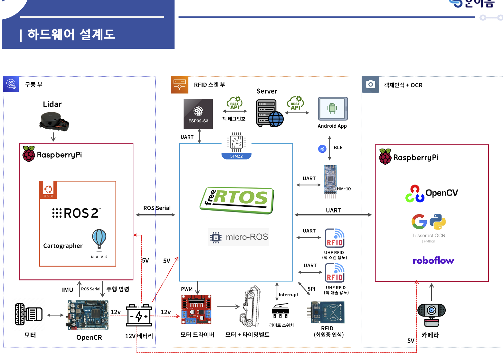
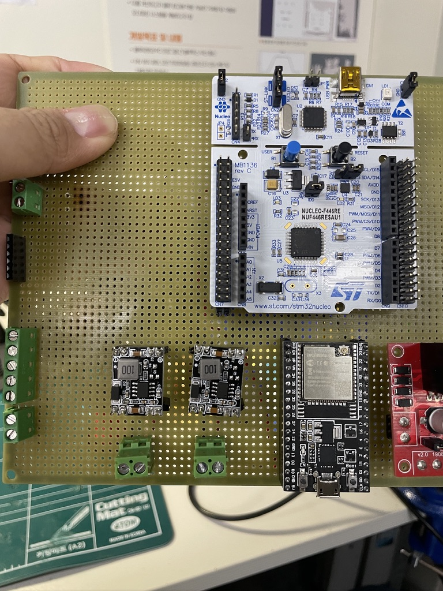
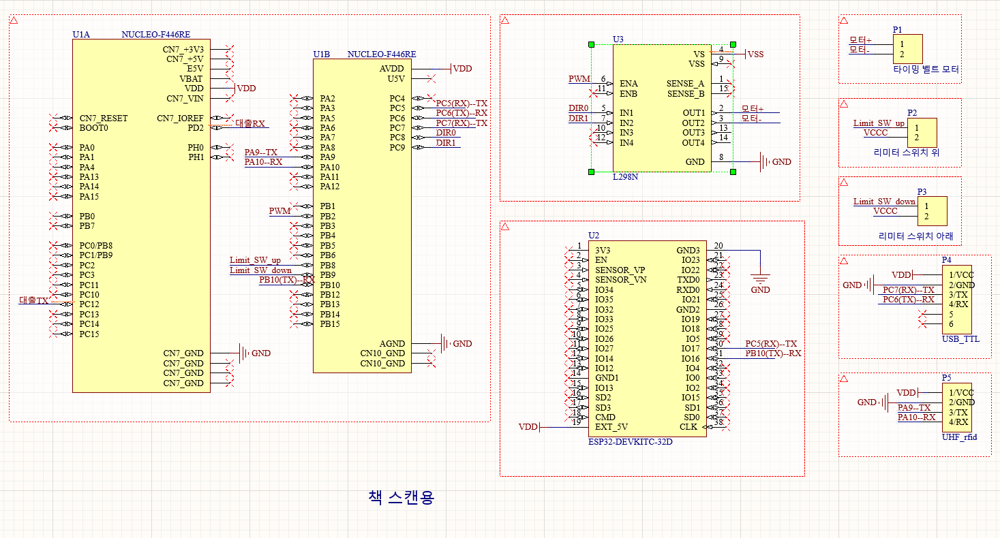
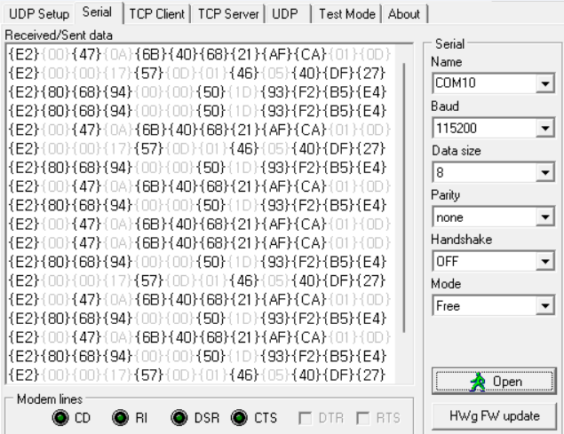
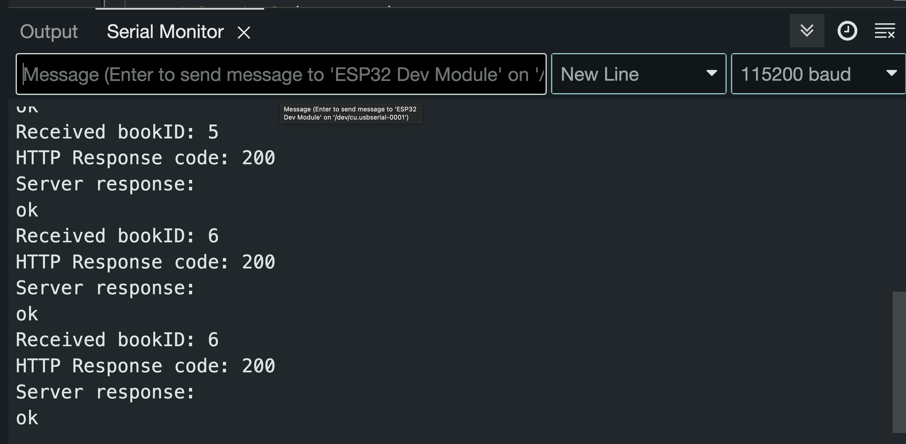

책의 위치와 대출을 연결하는 도서관 로봇
이동·도서 스캔·대출·청구기호 인식을 결합한 팀 프로젝트입니다.
2024 한국공학대전 총장상 · 캡스톤디자인 지역연계형 우수상 · 한이음 ICT멘토링 공모전 동상

전체 시스템
LiDAR와 ROS 2 기반 이동부가 책장으로 이동하고, 모터·타이밍벨트로 RFID 스캔부를 움직여 책 정보를 읽습니다. 서버의 위치 비교 결과와 객체인식·OCR을 연동해 잘못 놓인 책을 찾는 구조입니다.
정보의 흐름
STM32의 태그·위치 데이터를 ESP32가 받아 Wi-Fi/HTTP로 서버에 전송합니다. 잘못 놓인 책을 발견하면 정지 명령과 청구기호를 관련 장치로 전달합니다.
나의 담당 범위
ESP32와 RFID 송수신, 하드웨어 설계·제작, Android 앱을 담당했습니다. ROS 주행과 객체인식·OCR은 전체 팀 시스템의 구성으로 구분합니다.
스캔부와 대출부를 실물로 연결
통신 실험에서 기판 제작까지, 책 정보를 읽는 장치와 서버의 접점을 구현했습니다.


ESP32 · 서버 연동
회원카드는 ESP32와 RC522(13.56 MHz)로 읽고 Wi-Fi로 대출·반납을 요청했습니다. 도서 위치 확인은 STM32의 UART 데이터를 ESP32로 받아 서버에 전달했습니다. 개인 발표에 UART·HTTP 응답 기록을 남겼습니다.
하드웨어 설계·제작
책 스캔부와 책 대출부를 나누어 제작했습니다. 보드와 RFID, 모터 드라이버, 리미트 스위치의 전원·신호 배선을 구성하고 실물 기판과 외관을 준비했습니다.
사용자 인터페이스
Android 앱에서 회원증 인식과 대출할 책 정보를 확인하는 흐름을 다뤘습니다. 도서 스캔과 사용자 조작이 같은 시스템에서 이어지도록 구성했습니다.
RFID 인식 거리와 수신 속도 조정
읽을 책의 범위와 유입되는 태그 데이터량에 맞춰 센서 인식 거리와 통신 속도를 조정했습니다.


01 · RFID 인식 거리 조절
책 스캔 범위에 맞춰 UHF RFID 인식 거리를 조정했습니다. 센서 자료에는 RF 출력 18.5~26 dBm의 설정 명령이 정리돼 있습니다. 이는 설정 예시 범위이며 최종 적용값·실측 거리는 별도 기록이 없습니다.
02 · 대량 수신에 맞춘 통신 속도
다량의 태그 수신에 맞춰 통신 속도를 조정했습니다. 팀 STM32 자료에는 DMA 수신·큐 버퍼와 태그 읽기 완료 후 이벤트 전송 구조가 있습니다. 개인 담당인 ESP32 연동과 팀의 수신 구조를 함께 확인했습니다.
확인 · 장치부터 서버까지
개인 발표의 UART 수신·HTTP 응답 화면으로 장치와 서버 구간을 확인했습니다. UHF 자료는 인식 성공 응답의 24바이트 구성과 12바이트 태그 번호를 구분합니다. 처리량·유실률의 전후 측정치는 남아 있지 않습니다.